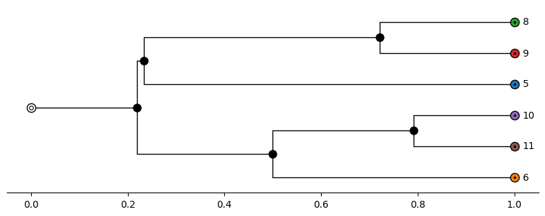
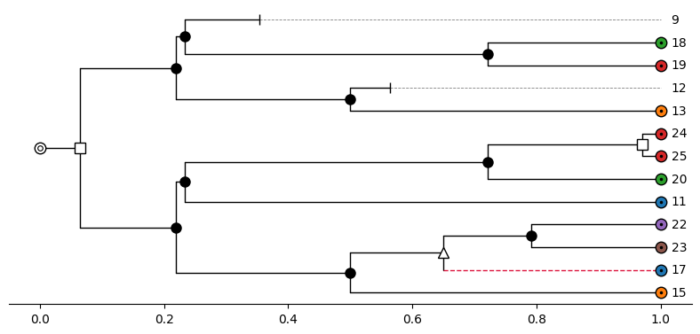
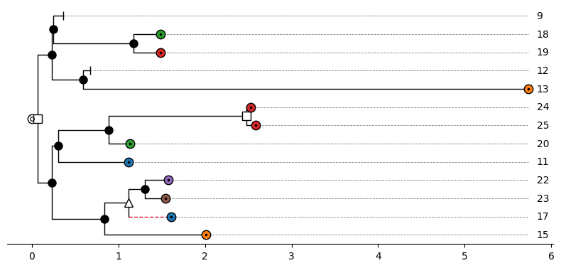
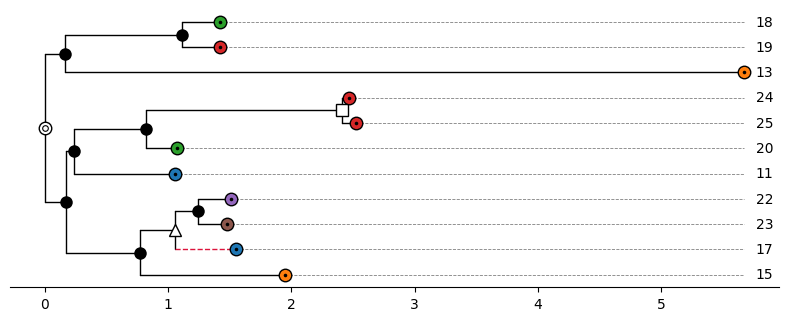
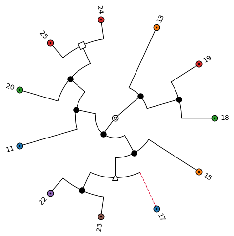
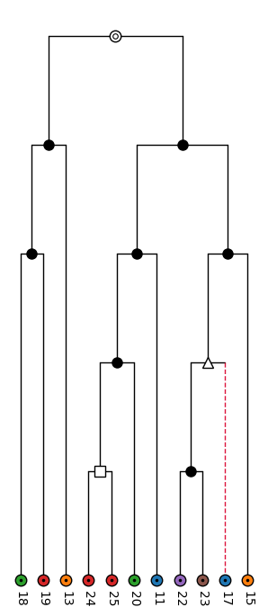
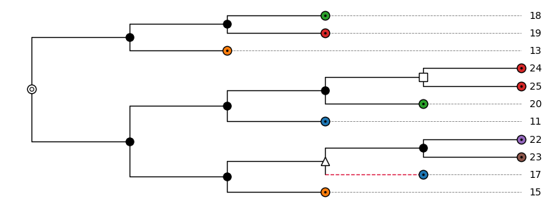
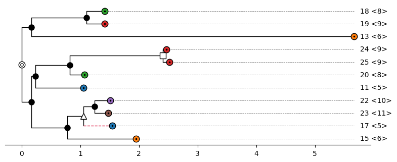
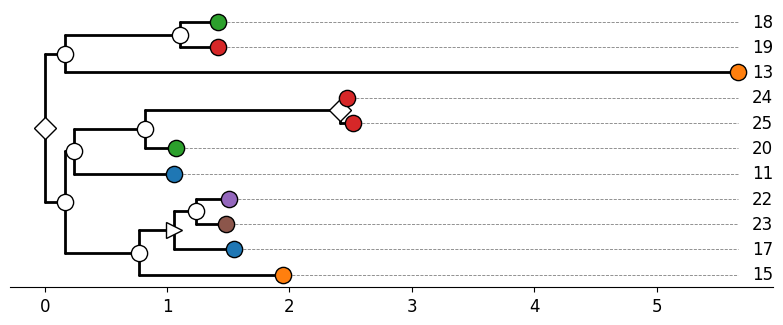

Tree visualization¶
The function visualize in the module asymmetree.visualization.tree_vis (also available from
asymmetree.visualization) draws a simulated species or gene tree. It is a thin wrapper around the
plot_tree function of tralda, which does the layout
and the rendering, and adds the AsymmeTree default style for the different event types.
Rendering requires matplotlib or plotly, which are optional dependencies:
pip install asymmetree[matplotlib] # matplotlib backend (default)
pip install asymmetree[plotly] # plotly backend
pip install asymmetree[viz] # both
Basic usage¶
import asymmetree.treeevolve as te
from asymmetree.visualization import visualize, assign_colors
S = te.species_tree_n_age(6, 1.0)
# dated gene tree (with losses)
dated_gene_tree = te.dated_gene_tree(S, dupl_rate=0.3, loss_rate=0.3, hgt_rate=0.3)
# gene tree with rate heterogeneity (with losses)
full_gene_tree = te.rate_heterogeneity(
dated_gene_tree,
S,
base_rate=1.0,
autocorr_variance=0.1,
rate_increase=("gamma", 0.5, 2.2),
inplace=False,
)
# gene tree with losses pruned
pruned_gene_tree = te.prune_losses(full_gene_tree)
# assign colors and visualize
species_colors, gene_colors = assign_colors(S, dated_gene_tree)
visualize(S, color_dict=species_colors, path="S.png", distance_axis=True)
visualize(dated_gene_tree, color_dict=gene_colors, path="T1.png", distance_axis=True)
visualize(full_gene_tree, color_dict=gene_colors, path="T2.png", distance_axis=True)
visualize(pruned_gene_tree, color_dict=gene_colors, path="T3.png", distance_axis=True)
Species tree:

Dated gene tree (with losses):

Full gene tree (with losses and rate heterogeneity):

Pruned gene tree (with losses pruned):

The path argument saves the figure to a file, and the format is derived from the extension (e.g.,
.png, .pdf, or .svg for matplotlib). Use show=True to display the figure (in addition). The
function returns (fig, ax) for the matplotlib backend and a plotly Figure for the plotly
backend, so that the figure can be modified afterwards.
Colors¶
The function assign_colors(species_tree, gene_tree) assigns a unique color to each non-loss
species leaf and to each non-loss gene the color of the species to which it belongs. The functions
assign_species_colors(tree) and assign_gene_colors(tree, species_colors=None) perform the two
steps separately. The returned dictionaries map leaf labels to colors and are passed to visualize
with the argument color_dict. Leaves that do not appear in color_dict are drawn in white.
Default style¶
If no tree_style is given, the AsymmeTree default style is used. The symbol of a node depends on
its event attribute:
| Node | Symbol |
|---|---|
| Extant leaf | circle with a dot, filled with the color from color_dict |
| Root | white circle with an inner ring |
Speciation ("S") |
black filled circle |
Duplication ("D") |
white square |
Horizontal gene transfer ("H") |
white triangle |
Gene conversion ("GC") |
black star |
Loss ("L") |
cap |
Edges that were created by a horizontal gene transfer (nodes with a truthy transferred attribute)
are drawn as dashed crimson lines. The size of all symbols can be adjusted with scale_symbols and
the size of the text with fontsize.
Layout and edge lengths¶
The most important options that are passed through to tralda are the following.
layout_mode controls the orientation of the tree:
"horizontal"(default): root on the left, leaves on the right."vertical": root at the top, leaves at the bottom."circular": root in the center, leaves on the outside.
edge_length_mode controls how the positions along the depth axis are determined:
"attr"(default): the length of an edge is read from a node attribute, which is"dist"by default and can be changed withedge_length_attr. Leaves that end before the maximum depth (e.g., losses) are connected to their labels by dashed gray lines."uniform": every edge has length 1."even": all leaves end at the same depth (cladogram), and the internal nodes are distributed evenly along each path from the root."rank": internal nodes are placed at their topological depth, i.e., the number of edges from the root, and the leaves are aligned.
node_rank_mode controls how internal nodes are placed along the perpendicular axis relative to
their children: "mean" (default; between the first and the last child), "first", "last", or
"node" (every node gets its own position, which avoids overlapping labels when the labels of
internal nodes are shown).
Circular layout with even edge lengths:
visualize(
pruned_gene_tree,
color_dict=gene_colors,
path="T3_circular.png",
layout_mode="circular",
edge_length_mode="even",
)

Vertical layout with edge lengths according to the topological depth:
visualize(
pruned_gene_tree,
color_dict=gene_colors,
path="T3_vertical.png",
layout_mode="vertical",
edge_length_mode="rank",
)

Horizontal layout with uniform edge lengths:
visualize(
pruned_gene_tree,
color_dict=gene_colors,
path="T3_uniform.png",
edge_length_mode="uniform",
)

Distance axis¶
With distance_axis=True, an x-axis is shown that gives the distance from the root, i.e., the sum
of the edge lengths. This requires the matplotlib backend, layout_mode="horizontal", and
edge_length_mode="attr", otherwise a ValueError is raised. Without the distance axis, the depth
of the tree is rescaled to the interval \([0, 1]\) by tralda.
Species information¶
For gene trees, species_info=True appends the species to which a gene belongs (the reconc
attribute) to the labels of the non-loss leaves. The given tree is not modified.
visualize(
pruned_gene_tree,
color_dict=gene_colors,
path="T3_species_info.png",
species_info=True,
distance_axis=True,
)

Renderer options¶
All other keyword arguments of visualize are passed to the tralda renderer of the chosen backend.
Frequently used options are:
| Option | Backend | Description |
|---|---|---|
figsize |
matplotlib | Figure size in inches (otherwise derived from the number of leaves) |
ax |
matplotlib | Existing axes to draw on |
width, height |
plotly | Figure size in pixels |
hover_attrs |
plotly | Node attributes shown in the hover tooltips |
show_labels |
both | Draw the leaf labels (default True) |
show_internal_labels |
both | Also draw the labels of internal nodes (default False) |
show_ghost_segments |
both | Dashed lines from short leaves to their labels (default True) |
rescale_depth |
both | Rescale the depth to the interval \([0, 1]\) (default True) |
For the complete list, see the documentation of tralda.
Custom styles¶
The appearance of nodes and edges is described by a TreeStyle from tralda, which can be passed to
visualize with the argument tree_style. The style of an individual node is a NodeStyle with
the fields symbol, symbol_size, symbol_color, symbol_edge_color, symbol_lw, edge_color,
edge_lw, edge_ls, label_color, label_fontsize, label_fontweight, and label_fontstyle.
Fields that are None are inherited from the layer below. The style of a node is determined in the
following order, where later layers win:
TreeStyle.default: the style of all nodesTreeStyle.style_fn: a function(node, layout_mode) -> NodeStyle | NoneTreeStyle.node_overrides: a dictionary{node: NodeStyle}
The class method TreeStyle.from_maps builds a style function from dictionaries that map node
attribute values to symbols, fill colors, or edge colors. The following example uses other symbols
for the events and thicker edges:
from tralda.visualization import NodeStyle, TreeStyle
custom_style = TreeStyle.from_maps(
symbol_attr="event",
symbol_map={"D": "diamond", "H": "triangle-right", "GC": "hexagon", "L": "x-mark"},
node_color_attr="label",
node_color_map=gene_colors,
root_symbol="circle-inner-ring",
leaf_symbol="circle",
internal_symbol="circle",
default=NodeStyle(edge_lw=2.0),
)
visualize(
pruned_gene_tree,
tree_style=custom_style,
path="T3_custom.png",
distance_axis=True,
scale_symbols=1.3,
fontsize="large",
)

Available symbols are "none", "dot", "cap", "circle", "square", "triangle-up",
"triangle-down", "triangle-left", "triangle-right", "star", "diamond", "pentagon",
"hexagon", "cross", "x-mark", "circle-dot", and "circle-inner-ring".
Note
A custom tree_style replaces the AsymmeTree default style, including the highlighting of
transferred edges. Therefore, color_dict cannot be combined with tree_style (a ValueError
is raised) and the leaf colors have to be defined by the style as in the example above. The
arguments scale_symbols and fontsize also work with a custom style.
Plotly backend¶
With backend="plotly", an interactive figure is created. A .html extension of path writes a
self-contained HTML file; other extensions write a static image (which requires the kaleido
package, included in the plotly extra).
fig = visualize(
pruned_gene_tree,
color_dict=gene_colors,
backend="plotly",
path="T3.html",
hover_attrs=["event", "reconc"],
)
The distance axis is not available for the plotly backend.
The scripts examples/tree_visualization.py and examples/tree_visualization_gallery.py contain
further code examples. The latter generates the figures shown on this page.